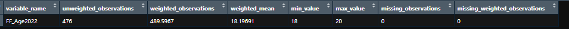
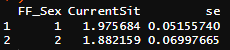

# load packages and custom functions --------------------------------------
source("00_packages_and_functions.R")
# read in data for this script --------------------------------------------
TELSdata <- haven::read_spss("data/TELS_DUMMY_DATA.sav"
#ensures that user-defined missing values in the spss file
# are read into R as NA
# If you want to bring in these codes into analysis (e.g. you might be interested
# in the share who refused) change to TRUE.
, user_na=FALSE)6 Summary tables and weighted averages
This section will cover how to create weighted and unweighted summary tables. It will also cover how to calculate weighted averages.
You can use 06_summary_tables_and_avgs.R as a reference for this section.
WEIGHTS
SPSS calculates weighted results slightly differently to R. SPSS rounds weighted counts to the nearest whole number, and then bases any subsequent statistics off that.
R does not round, so results are slightly more accurate. You may find that results do not exactly match SPSS output (difference of <0.5pp) depending on how your contractor has calculated their weights.
6.1 Load packages, functions and read in data
You need to make sure you load the required packages and custom functions if you haven’t already. You also need to read in the required data for this script.
Even if you read in the data before, we recommend you re-run this code so that you’re working with a data set without any alterations you may have done to it in previous scripts.
Run the code
Run the code below in the corresponding script in your project.
6.2 Summary tables
This section will cover how to use the custom function create_summary_table() to create weighted or unweighted summary tables.
These tables include the following columns:
the variable name
unweighted observations
weighted observations - weighted tables only
weighted mean or mean
minimum value
maximum value
unweighted missing values
weighted missing values - weighted tables only
Outputs
The function create_summary_table() has three modes of output:
NULL: save table to the environment - single variables only"print": results will be printed in the console - single and multiple variables"download": save as an Excel sheet in the working directory - single and multiple variables
NOTE: if you use a function to download multiple tables without using table_name to specify different table names for your outputs then your table will be overwritten every time you download it.
6.2.1 Single variable
You can use create_summary_table() to create a summary table of one variable in a data set.
In the example below, we will create a weighted summary table for FF_Age2022.
Run the code
Run the code below in the corresponding script in your project. If you are starting from this point in the guide, remember to run lines from the top of the script to read in the data and reload the packages and custom functions.
# create a summary table that gives you the mean, max, min etc. for Age
st_age <- create_summary_table(data=TELSdata,
variables ="FF_Age2022"
, weight = "TechEd_W3_cross" )You should see st_age in the Environment pane in RStudio, after running the code above. Click on it and you should be able to see a table similar to the one shown in the image below.

6.2.2 Multiple variables
You can also use create_summary_table() to create summary tables for different variables from the same table at the same time. However, you can only print or download those tables. You cannot save them to the environment in one go.
In the example below, we will print and download tables for the variables FF_Sex, FF_Ethnic5, SEN_DV and FSM_DV.
Run the code
Run the code below in the corresponding script in your project. If you are starting from this point in the guide, remember to run lines from the top of the script to read in the data and reload the packages and custom functions.
#across multiple variables
# List of variables to loop through
variables <- c("FF_Sex", "FF_Ethnic5", "SEN_DV", "FSM_DV")
create_summary_table(data=TELSdata,
variables =variables
, weight = "TechEd_W3_cross",
output = "print")6.2.3 unweighted data
To create unweighted summary tables for your data, omit the specification of the weight parameter in the create_summary_table() function. In the example below, we will recreate the summary table above, but we will make it unweighted.
Optional - Find out how we create unweighted summary tables
When you don’t specify the weight parameter, it automatically becomes assigned NULL. This prompts create_summary_table() to create an artificial weight set to 1 (i.e., every case is treated equally) and use that instead.
Run the code
Run the code below in the corresponding script in your project. If you are starting from this point in the guide, remember to run lines from the top of the script to read in the data and reload the packages and custom functions.
# List of variables to loop through
variables <- c("FF_Sex", "FF_Ethnic5", "SEN_DV", "FSM_DV")
create_summary_table(data=TELSdata,
variables =variables,
output = "print")6.3 Weighted averages
You can use the custom function weighted_avg()to get weighted means or medians. This function will only output functions in the console. You cannot save them to the environment or download them using weighted_avg().
Outputs
The function weighted_avg() only print its output in the console.
6.3.1 Mean
In this example, we will calculate the weighted mean for CurrentSit and we will remove NA values from the calculation.
Run the code
Run the code below in the corresponding script in your project. If you are starting from this point in the guide, remember to run lines from the top of the script to read in the data and reload the packages and custom functions.
#calculate weighted mean for currentsit
weighted_avg(data = TELSdata,
x="CurrentSit",
type="mean",
weight ="TechEd_W3_cross",
na.rm=TRUE)6.3.2 Mean by group
In this example, we will calculate the weighted mean for CurrentSit but we will group it by FF_Sex. We will remove NA values from the calculation as well.
Run the code
Run the code below in the corresponding script in your project. If you are starting from this point in the guide, remember to run lines from the top of the script to read in the data and reload the packages and custom functions.
weighted_avg(data = TELSdata,
x="CurrentSit",
type="avg by grp",
weight ="TechEd_W3_cross",
by ="FF_Sex" ,
na.rm=TRUE
)After you run the code above, you should be able to see output in the console that is similar to the image below.

6.3.3 Median
In this example, we will calculate the weighted median for CurrentSit. For these calculations, you need to specify the quantile you’re interested in. The ci parameter is for calculating the confidence interval and it defaults to TRUE, but we are setting it to FALSE in this example to omit the calculation.
Run the code
Run the code below in the corresponding script in your project. If you are starting from this point in the guide, remember to run lines from the top of the script to read in the data and reload the packages and custom functions.
# calculate weighted median for currentsit
weighted_avg(data = TELSdata,
x="CurrentSit",
#outline type of average
type="median",
weight ="TechEd_W3_cross",
#set it at 0.5 (50% quantile)
quantile=0.5,
ci=FALSE)In this example, we will calculate the median for CurrentSit but for a different quantile (top 10%).
Run the code
Run the code below in the corresponding script in your project. If you are starting from this point in the guide, remember to run lines from the top of the script to read in the data and reload the packages and custom functions.
# adjust quantile figure to calculate other quantiles or deciles, e.g. 10%
weighted_avg(data = TELSdata,
x="CurrentSit",
#outline type of average
type="median",
weight ="TechEd_W3_cross",
#set it for 10%
quantile=0.1,
ci=FALSE)
Note
You may see the following in the output in the console of the code above: attr(,"hasci")[1] FALSE. This indicates whether the function has computed confidence intervals for the quantiles. When hasci is FALSE, it means that confidence intervals are NOT included in the output. When hasci is TRUE, it means that confidence intervals are included in the output.
6.4 Combine the learning
It’s important to bear in mind that the code in this guide can be combined to make your analysis more suitable to your needs.
In the example below we will create a summary table but with derived variables. We will combine our code for deriving variables and create_summary_table() for this.
Run the code
Run the code below in the corresponding script in your project. If you are starting from this point in the guide, remember to run lines from the top of the script to read in the data and reload the packages and custom functions.
#create derived variable
TELSdata <- TELSdata %>%
dplyr::mutate(Ful_recomm=case_when(
CurrentSit %in% c(1,2) & Recommend %in% c(1,2) ~ 1,
CurrentSit %in% c(1,2) & Recommend %in% c(4,5) ~ 2,
CurrentSit %in% c(4,5) & Recommend %in% c(1,2) ~ 3,
TRUE ~ 4))
#label the derived variable column
TELSdata <- TELSdata %>%
dplyr::mutate(Ful_recomm= haven::labelled(Ful_recomm,
labels=c("Fulfilled and recommend" = 1,
"Fulfilled but don't recommend" = 2,
"Not Fulfilled and don't recommend" = 3,
"Other" = 4
) ))
#create summary table for the derived variable
create_summary_table(data=TELSdata,
variables ="Ful_recomm",
output = "print")In the next example, we will calculate a weighted mean for the derived variable that we created above. We will still use our knowledge for deriving variables but we will combine that with the weighted_avg() function.
Run the code
Run the code below in the corresponding script in your project. If you are starting from this point in the guide, remember to run lines from the top of the script to read in the data and reload the packages and custom functions.
#calculate weighted mean for the derived variable
weighted_avg(data = TELSdata,
x="Ful_recomm",
type="mean",
weight ="TechEd_W3_cross" )